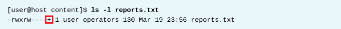
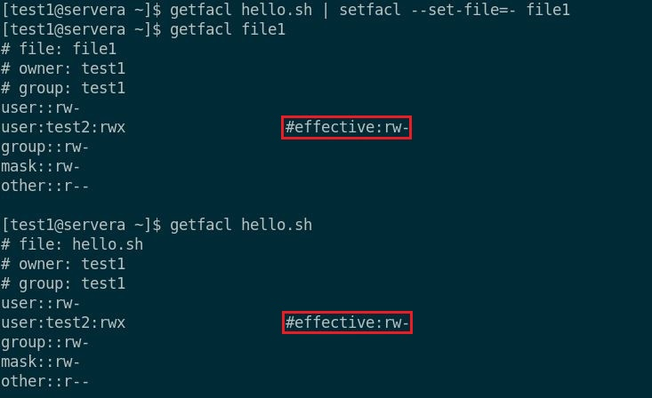
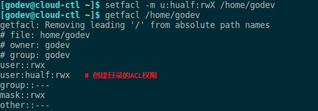
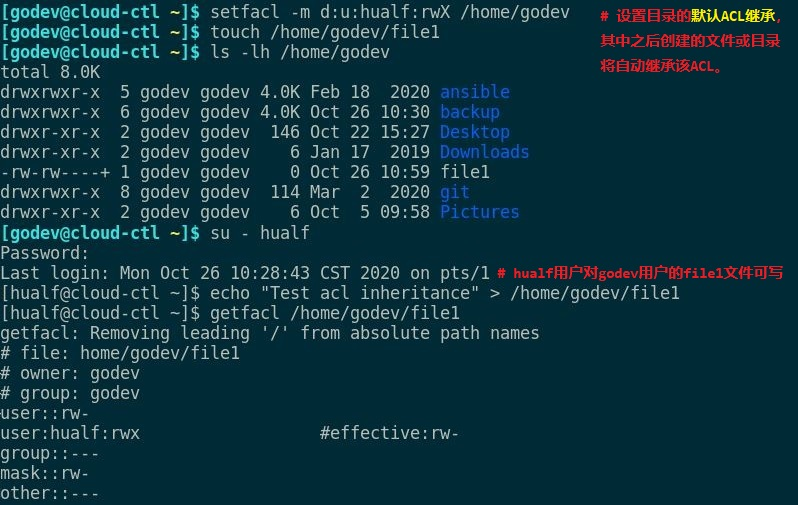
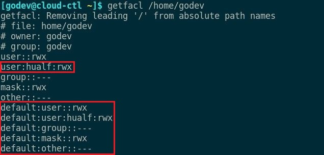

第四章 使用ACL控制对文件的访问
目标：
- 解释并设置文件的访问控制列表（ACL），以处理需要复杂用户和组访问权限的情况。
章节：
- 解释文件ACL
- 使用ACL保护文件安全
第一节：解释文件ACL
目标：
- 完成本节后，学生应该能：
- 描述ACL和文件系统挂载选项。
- 使用ls和getfacl查看并解释ACL。
- 描述ACL掩码和ACL权限优先级。
- 确定默认情况下红帽企业Linux使用ACL的位置。
访问控制列表概念：access control list（ACL）
- 当文件仅由单个所有者和指定的一组人使用时，标准Linux文件权限即可满足要求。
- 但是，有些用例要求多个指定的用户和组以不同的文件权限集来访问文件。
- 访问控制列表便提供了该功能。
- 借助ACL，可使用与常规文件权限相同的权限标志（读取、写入和执行）向由用户名、组名、
UID或GID标识的多个用户和组授予权限。
- 除了文件所有者和文件的组从属关系之外，这些额外的用户和组分别被称为指定用户和指定组，
因为它们不是在长列表中指定的，而是在ACL中指定的。
- 用户可以对属于自己的文件和目录设置ACL。
- 被分配了 CAP_FOWNER Linux 功能的特权用户可以对任何文件或目录设置ACL。
- 新文件和子目录会自动从父目录的默认ACL（若已设置）中继承ACL设置。
- 与常规文件的访问规则相似，父目录层次结构至少需要其他搜索（执行）权限集，以便启用
指定用户和指定组的访问权限。
文件系统ACL支持：
- 文件系统需在挂载选项上启用ACL支持。
- XFS文件系统内置ACL
- RHEL8的 ext3 或 ext4 文件系统挂载默认启用 acl 选项。
- 要启用文件系统ACL支持，需在mount命令或/etc/fstab中有ACL挂载选项。
- $ man 5 acl：查看ACL相关的详细信息
查看和解释ACL权限：
- ls -l仅输出最少的ACL设置信息。

- 权限字符串末尾的加号（+）表示该文件存在ACL。
- $ getfacl <filename>：查看文件的ACL


* 注意：
1. 父目录中的文件或子目录的权限由该父目录决定！

2. ACL中的mask值为有效ACL权限

3. 修改mask值后将影响ACL中已有的权限

查看目录ACL：
- $ getfacl <directory>：查看目录的ACL

ACL掩码：mask
- ACL掩码定义可授予指定用户、组所有者和指定组的最大权限。
- 它不限制文件所有者或其他用户的权限。
- 所有实施ACL的文件和目录都将具有ACL掩码。
- 可使用getfacl查看掩码，并通过setfacl显式设置掩码。
- 如果未显式设置，系统会自动计算并添加掩码，但也可从父目录默认掩码设置中继承掩码。
- 默认情况下，每当添加、修改或删除任何受影响的ACL时，均会重新计算掩码。
ACL权限优先级：ACL permission precedence
- 在决定一个进程（正在运行的程序）能否访问文件时，将按如下所示应用文件权限和ACL。
- 如果正在以文件所有者身份运行进程，则应用文件的用户ACL权限。
- 如果正在以指定用户ACL条目中列出的用户身份运行进程，则应用指定用户ACL权限（只要掩码
允许）。
- 如果正在以与文件的组所有者相匹配的组身份运行进程，或者以具有显式指定组ACL条目的
组身份运行进程，则应用相匹配的ACL权限（只要掩码允许）。
- 否则，将应用文件的其他ACL权限。
练习 P97：INTERPRETING FILE ACLS
第二节：使用ACL保护文件安全
目标：
- 完成本节后，学生应该能：
- 使用setfacl更改常规ACL文件权限。
- 控制新文件和目录的默认ACL文件权限。
更改ACL文件权限：
- 使用setfacl命令添加、修改或删除文件和目录的ACL。
1. r：读取权限
2. w：写入权限
3. x：执行权限
4. -：缺少相关权限
5. X：若文件无相关的执行权限，则只设置目录（而非常规文件）的执行权限。
- 使用 -m 选项设置ACL。
- 示例：
$ setfacl -m u:<username>:rX <filename>
$ setfacl -m g:<groupname>:rw <filename>
$ setfacl -m o::- <filename>
$ setfacl -m u::rwx,g:<groupname>:rX,o::- <filename>
- 使用getfacl作为输入：
$ getfacl <file1> | setfacl --set-file=- <file2>
# --set-file 选项可接受来自文件或STDIN的输入
# 短划线字符（-）指定使用STDIN
# 以上示例中，两个文件的ACL设置相同。

- 递归ACL修改：
1. 使用 -R 选项以递归方式应用ACL。
2. 递归方式可能需要使用大写 X 权限，只有目录会设置执行权限，以允许进行目录搜索。
3. 以非递归方式设置ACL时，最好也使用大写 X，可防止管理员意外向普通文件添加执行权限。

- 删除ACL：
1. $ setfacl -x u:<username> <filename>：从文件或目录ACL中删除指定用户和组
2. 其他现有ACL条目均保持不变。

3. 掩码只能在未设置其他ACL的情况下删除，因此必须最后删除。
4. 如下所示，删除文件或目录的所有ACL（包括目录默认ACL）。

* 注意：-b选项也可用于删除默认ACL
控制默认ACL文件权限：
- 为了确保目录中创建的文件和目录继承ACL，需要在目录上使用默认ACL。
- 目录本身仍需要显式设置ACL，默认ACL仅提供ACL继承功能。

* 注意：
1. 若使用默认ACL继承，需显示设置目录的ACL，直接设置于默认ACL将无法生效！
2. 默认ACL只对该目录中之后创建的文件或目录生效，之前创建的文件或目录依然
保持原始权限。
- 默认ACL继承示例：



删除默认ACL条目：
- 删除默认ACL的方式与删除标准ACL一样，以 d: 开头，或使用 -d 选项。

- $ setfacl -k <directory>：删除目录的所有默认ACL条目
练习 P103：SECURING FILES WITH ACLS
Lab P108：CONTROLLING ACCESS TO FILES WITH ACLS